Visualising and Analysing Survey and Questionnaire Data with R

Introduction

Surveys and questionnaires are among the most widely used research instruments across the social sciences, linguistics, psychology, education, and applied language research. They provide a comparatively efficient means of collecting structured data from large numbers of participants, and — when designed and analysed carefully — can yield robust and reproducible insights into attitudes, behaviours, and cognitive patterns that are otherwise difficult to access directly.
This tutorial covers the full survey research workflow in R: from design principles and the construction of survey instruments, through data visualisation, to statistical analysis. It is aimed at beginners and intermediate R users and does not assume prior knowledge of survey methodology or statistics beyond a basic familiarity with R. The goal is not to provide an exhaustive treatment of any single method but to offer a practical, reproducible introduction to the most important tools and techniques.
The tutorial is organised into five main parts:
- Survey design — what to consider when constructing questions and scales
- Creating surveys in R — how to build deployable survey instruments using
shinyandsurveydown - Visualising survey data — cumulative density plots, pie charts, bar plots, and Likert plots
- Reliability — Cronbach’s α, Guttman’s λ₆, and McDonald’s ω
- Statistical analysis — factor analysis and PCA (merged), and ordinal regression with diagnostics
Prerequisite Tutorials
Before working through this tutorial, familiarity with the following is recommended:
Learning Objectives
By the end of this tutorial you will be able to:
- Identify and apply core principles of questionnaire and survey design
- Distinguish between nominal, ordinal, and numeric scale types and select the appropriate scale for a research question
- Build a deployable browser-based survey using
shinyandsurveydown - Visualise Likert-scaled data using cumulative density plots, bar plots, and the
likertpackage - Evaluate the internal consistency of a set of survey items using Cronbach’s α, Guttman’s λ₆, and McDonald’s ω
- Use factor analysis and principal component analysis to identify latent structure in survey data
- Fit, interpret, and visualise an ordinal logistic regression model
- Calculate and interpret odds ratios and confidence intervals from ordinal regression output
Citation
Martin Schweinberger. 2026. Visualising and Analysing Survey and Questionnaire Data with R. The Language Technology and Data Analysis Laboratory (LADAL), The University of Queensland, Australia. url: https://ladal.edu.au/tutorials/surveys/surveys.html (Version 2026.03.28), doi: .
Survey Design
Section Overview
What you’ll learn: The fundamental principles of questionnaire design, common pitfalls to avoid, and the properties of the four main scale types used in survey research
What Is a Survey?
A survey is a research method for gathering information from a sample of people. A questionnaire is the instrument — typically a set of written questions or statements — used to collect that information. Brown (2001) defines questionnaires as “any written instruments that present respondents with a series of questions or statements to which they are to react either by writing out their answers or selecting among existing answers.”
Questionnaires elicit three broad types of data:
- Factual — what the respondent is (age, gender, first language, years of study)
- Behavioural — what the respondent does (how often they use a language, which media they consume)
- Attitudinal — what the respondent thinks or feels (attitudes towards language learning, motivation, anxiety)
Surveys are comparatively cheap and efficient, can reach large and geographically dispersed samples, and can be delivered in many formats (face-to-face, telephone, web, postal). Their main weakness is susceptibility to social desirability bias — the tendency of respondents to answer in ways they believe will be viewed favourably rather than in ways that reflect their actual behaviour or attitudes. Careful question wording, anonymity, and the inclusion of validity checks can reduce (but not eliminate) this bias.
Design Principles
The following principles are widely accepted in survey methodology and should be applied systematically before any questionnaire is distributed.
Keep it as short as necessary. A questionnaire should be long enough to collect all required data — including all relevant sociodemographic variables — but no longer. Every item adds to respondent burden and increases the risk of fatigue, inattention, and dropout. As a rough guideline, aim for a completion time of under 15 minutes for general-population surveys, and communicate this estimate to respondents at the outset.
Use simple, unambiguous language. Avoid jargon, technical terminology, and double negatives. Each item should be interpretable in one and only one way by all respondents in your target population. Leading questions (e.g. “Don’t you think that public transport is underfunded?”) and value-laden language should be avoided to minimise response bias.
Ask one thing at a time. Double-barrelled questions — those that contain two propositions in a single item — should always be split. For example, “Do you find this course useful and enjoyable?” should become two separate items: (1) “Do you find this course useful?” and (2) “Do you find this course enjoyable?”. If a respondent answers No to the combined question, it is impossible to know whether they mean the course is neither useful nor enjoyable, useful but not enjoyable, or not useful but enjoyable.
Order questions logically. Related items should be grouped into thematic blocks. Within blocks, move from more general to more specific questions. The very first and very last items in a questionnaire receive disproportionate attention, so do not place your most sensitive or most important items in these positions.
Randomise within blocks. If a questionnaire contains both test items and filler items, or multiple items tapping into the same construct, quasi-randomise the order within each block. True randomisation ensures that the effects of item order are distributed across respondents; quasi-randomisation additionally ensures that test items do not appear consecutively or in the first/last position.
Include reverse-coded items. Reverse-coded (or reverse-polarity) items are questions that express the opposite proposition to the primary construct. For example, if the construct is motivation, a reverse item might be “I rarely feel motivated to study this language.” Including such items allows you to detect respondents who are answering randomly or are simply ticking the same response option for every item (acquiescence bias). Responses to reverse items should be recoded before computing construct scores.
Pilot before distributing. Always test your questionnaire on a small sample (5–10 people) from the target population before full deployment. The pilot reveals ambiguous wording, format problems, and unexpected interpretations, and provides an accurate estimate of completion time. Pilot participants should be encouraged to think aloud and provide written feedback.
Scale Types
The type of scale used for each item determines what statistical methods can legitimately be applied to the resulting data. There are four main scale types, ordered here from least to most informative.
Nominal Scales
A nominal scale (or categorical scale) classifies respondents into unordered categories. Dichotomous nominal scales have exactly two options (yes/no, male/female, L1 speaker/L2 learner). Polytomous nominal scales have more than two unordered categories (country of birth, native language, educational institution). Nominal data can only be summarised using frequencies and proportions; means and standard deviations are meaningless.
Ordinal Scales
An ordinal scale allows the values to be ranked, but the intervals between ranks are not necessarily equal or quantifiable. A classic example is a competition ranking: finishing 2nd is not exactly “twice as good” as finishing 4th. The most important ordinal scale in survey research is the Likert scale, introduced by the psychologist Rensis Likert (Likert 1932).
A typical five-point Likert item looks like this:
| Value | Label |
|---|---|
| 1 | Strongly disagree |
| 2 | Disagree |
| 3 | Neither agree nor disagree |
| 4 | Agree |
| 5 | Strongly agree |
Likert scales can be balanced (odd number of options, with a neutral midpoint) or unbalanced (even number of options, which forces respondents to lean towards one pole — this is sometimes called a forced-choice format). Likert scales with 5 or 7 points are most common; 7-point scales provide finer resolution at the cost of greater cognitive demand.
Likert Items vs. Likert Scales
Strictly speaking, a Likert item is a single statement with a rating response; a Likert scale is the composite score computed from multiple related Likert items. Much published research uses the two terms interchangeably, but the distinction matters for statistical analysis: individual Likert items are ordinal, while a composite Likert scale score (the sum or mean of several items) is often treated as approximately interval-level for the purposes of parametric testing.
Interval Scales
For an interval scale, the distances between adjacent values are equal and meaningful, but the scale has no true zero point. Temperature measured in Celsius or Fahrenheit is the canonical example: 20°C is not twice as hot as 10°C, because 0°C is an arbitrary reference point rather than the complete absence of heat. In survey research, composite Likert scores and many psychological scales are often treated as interval-level data, which allows the use of means, standard deviations, and parametric statistics.
Ratio Scales
A ratio scale has equal intervals and a true zero point, meaning that ratios between values are interpretable: a reaction time of 1,000 ms is exactly twice as long as 500 ms. Frequency counts, response times, and age measured in years are ratio-scale variables. Ratio-scale data are the most statistically flexible and support the full range of parametric methods.
Choosing the Right Scale
Always aim to collect data at the highest meaningful level of measurement. A question about income, for example, could be measured nominally (above/below median), ordinally (low/medium/high income bracket), or on a ratio scale (actual income in dollars). The ratio-scale version preserves the most information and can always be collapsed to a lower level of measurement during analysis — but the reverse is not possible.
Check Your Understanding: Survey Design
Q1. A researcher asks: “Do you find learning English grammar difficult and time-consuming?” What is the main problem with this item?
Q2. Which of the following variables is measured on a ratio scale?
Creating Surveys in R
Section Overview
What you’ll learn: How to build deployable, browser-based survey instruments entirely within R using two complementary tools — shiny (a general-purpose interactive web application framework) and surveydown (a dedicated survey-building package built on Quarto and Shiny) — and how to choose between them for a given use case
One of the most compelling recent developments for survey researchers who work in R is the ability to design, deploy, and collect data from surveys entirely within the R ecosystem. This eliminates the dependency on commercial platforms (Qualtrics, SurveyMonkey, Google Forms) and their associated licensing costs and data-sharing terms, and keeps the full pipeline — from instrument construction to analysis — in a single reproducible environment.
Two tools are particularly well-suited for this purpose: Shiny and surveydown.
Shiny Surveys
Shiny is a general-purpose framework for building interactive web applications in R. A Shiny survey is an R script (or pair of scripts) that defines both a user interface (the questions respondents see) and server logic (how responses are stored and processed). Shiny surveys can range from a simple single-page form to a complex adaptive instrument with branching logic, multimedia stimuli, and real-time feedback.
A Minimal Shiny Survey
The example below illustrates the essential structure of a Shiny survey. It collects three items: the respondent’s native language (text input), their self-rated English proficiency (5-point Likert scale), and their agreement with a motivation statement (5-point Likert scale). Responses are written to a CSV file on submission.
Running Shiny Apps Locally
To run a Shiny app, paste the code below into an R script, save it as app.R, and run shiny::runApp("app.R") in the R console, or click the Run App button that appears in RStudio when the file is open. The app will open in your default browser. For deployment to the web (so that respondents can access it without running R), use shinyapps.io (free tier available) or a self-hosted Shiny Server.
Code
# Install once if not already present
install.packages("shiny")Code
library(shiny)
# --- User Interface -----------------------------------------------------------
ui <- fluidPage(
titlePanel("Language Learning Survey"),
# Progress indicator
tags$p(style = "color: grey; font-size: 0.9em;",
"Please answer all questions below, then click Submit."),
# Q1: native language (free text)
textInput(
inputId = "native_lang",
label = "Q1. What is your native language?",
placeholder = "e.g. Mandarin, German, Arabic ..."
),
# Q2: proficiency (Likert — radio buttons)
radioButtons(
inputId = "proficiency",
label = "Q2. How would you rate your overall English proficiency?",
choices = c(
"1 — Beginner" = 1,
"2 — Elementary" = 2,
"3 — Intermediate" = 3,
"4 — Upper-intermediate" = 4,
"5 — Advanced/Native-like" = 5
),
selected = character(0) # no default selection
),
# Q3: motivation (Likert — radio buttons)
radioButtons(
inputId = "motivation",
label = "Q3. I am motivated to improve my English skills.",
choices = c(
"1 — Strongly disagree" = 1,
"2 — Disagree" = 2,
"3 — Neither agree nor disagree" = 3,
"4 — Agree" = 4,
"5 — Strongly agree" = 5
),
selected = character(0)
),
# Submit button
actionButton("submit", "Submit", class = "btn-primary"),
# Feedback message area
uiOutput("feedback")
)
# --- Server Logic -------------------------------------------------------------
server <- function(input, output, session) {
observeEvent(input$submit, {
# Validate: require all fields
if (input$native_lang == "" ||
length(input$proficiency) == 0 ||
length(input$motivation) == 0) {
output$feedback <- renderUI(
tags$p(style = "color: red;",
"Please complete all questions before submitting.")
)
return()
}
# Build response row
response <- data.frame(
timestamp = Sys.time(),
native_lang = input$native_lang,
proficiency = as.integer(input$proficiency),
motivation = as.integer(input$motivation)
)
# Append to CSV (create file if it does not exist)
results_file <- "survey_responses.csv"
write.table(
response,
file = results_file,
sep = ",",
col.names = !file.exists(results_file),
row.names = FALSE,
append = TRUE
)
# Confirmation message and disable submit button
output$feedback <- renderUI(
tags$p(style = "color: green; font-weight: bold;",
"Thank you — your response has been recorded!")
)
shinyjs::disable("submit")
})
}
# --- Launch ------------------------------------------------------------------
shiny::shinyApp(ui = ui, server = server)
Extending the Shiny Survey
The minimal example above can be extended in several ways:
- Branching logic: use
conditionalPanel()orobserve()+updateUI()to show or hide questions based on previous responses - Multiple pages: use
tabsetPanel()or a custom page-counter reactive value to split a long survey across screens - Randomisation: use
sample()on a vector of question labels at the start of each session to randomise item order - Database backend: replace the CSV write with a
DBI/RSQLiteorpoolconnection for more robust multi-user data collection - Timer: record response latencies using
Sys.time()at question render and at submission
surveydown
surveydown is a dedicated survey-building package for R that takes a different approach from Shiny. Instead of writing UI and server code, you write your survey as a Quarto document — using familiar markdown syntax for text and standard R code chunks for question definitions — and surveydown compiles it into a Shiny app automatically. This makes it significantly faster to author surveys, easier to version-control (the survey is plain text), and more natural for researchers already working in Quarto.
Code
# Install once
install.packages("surveydown")A surveydown survey consists of two files:
survey.qmd— the Quarto document containing your questionsapp.R— a minimal launcher script that connects to a database and runs the app
The Survey Document (survey.qmd)
Code
# Contents of survey.qmd
# (This is a Quarto document, not an R chunk — shown here for illustration)
# ---
# server: shiny
# ---
#
# ```{r setup}
# #| include: false
# library(surveydown)
# ```
#
# ::: {#welcome .sd-page}
# # Language Learning Survey
#
# Thank you for participating. This survey takes approximately 3 minutes.
# Please answer all questions honestly — your responses are anonymous.
#
# ```{r}
# sd_next(next_page = "questions")
# ```
# :::
#
# ::: {#questions .sd-page}
# ```{r}
# sd_question(
# type = "text",
# id = "native_lang",
# label = "What is your native language?"
# )
#
# sd_question(
# type = "mc",
# id = "proficiency",
# label = "How would you rate your overall English proficiency?",
# options = c(
# "1 — Beginner" = "1",
# "2 — Elementary" = "2",
# "3 — Intermediate" = "3",
# "4 — Upper-intermediate" = "4",
# "5 — Advanced / Native-like" = "5"
# )
# )
#
# sd_question(
# type = "mc",
# id = "motivation",
# label = "I am motivated to improve my English skills.",
# options = c(
# "1 — Strongly disagree" = "1",
# "2 — Disagree" = "2",
# "3 — Neither agree nor disagree" = "3",
# "4 — Agree" = "4",
# "5 — Strongly agree" = "5"
# )
# )
#
# sd_next(next_page = "end")
# ```
# :::
#
# ::: {#end .sd-page}
# # Thank you!
# Your response has been recorded.
# :::The Launcher (app.R)
Code
library(surveydown)
# Connect to a local SQLite database to store responses
db <- sd_database(
host = "localhost",
dbname = "survey_results.db",
table = "responses"
)
# Run the survey
sd_server(db = db)Shiny vs. surveydown: When to Use Which
| Feature | Shiny | surveydown |
|---|---|---|
| Authoring format | R script (UI + server) | Quarto markdown |
| Learning curve | Moderate — requires Shiny knowledge | Low — familiar markdown + R chunks |
| Branching/skip logic | Full flexibility via observe() |
Built-in sd_skip_if() and sd_show_if() |
| Question types | Manual — any HTML widget | Built-in: text, MC, matrix, slider, etc. |
| Version control | R script | Plain text Quarto doc |
| Data storage | Any (CSV, SQLite, PostgreSQL, etc.) | SQLite or Supabase (PostgreSQL) via sd_database() |
| Deployment | shinyapps.io, Shiny Server | shinyapps.io, Posit Connect |
| Best for | Complex adaptive surveys, experiments | Standard questionnaires, Likert surveys |
As a rule of thumb: use surveydown for standard questionnaires and Likert-based surveys where rapid authoring, readability, and version control matter; use Shiny directly when you need full programmatic control, complex adaptive branching, experimental timing, or integration with custom data pipelines.
Check Your Understanding: Creating Surveys in R
Q3. You are designing an experiment that presents participants with audio stimuli and requires them to respond within a 3-second window, with their response latency recorded to the nearest millisecond. Which tool is more appropriate, and why?
Setup
Installing Packages
Code
# Run once to install — comment out after installation
install.packages("tidyverse")
install.packages("likert")
install.packages("MASS")
install.packages("psych")
install.packages("ggplot2")
install.packages("here")
install.packages("flextable")
install.packages("GPArotation")
install.packages("ufs")
install.packages("brant")
install.packages("checkdown")Loading Packages
Code
# Load at the start of every session
library(tidyverse) # dplyr, ggplot2, stringr, tidyr
library(likert) # Likert-scale visualisation
library(MASS) # polr() for ordinal regression
library(psych) # alpha(), factor analysis
library(ggplot2) # visualisation
library(here) # portable file paths
library(flextable) # formatted display tables
library(GPArotation) # rotation methods for factor analysis
library(ufs) # scaleStructure() for omega
library(brant) # Brant test for proportional odds assumption
library(checkdown) # interactive quiz questions
# define colour palettes used throughout
clrs3 <- c("firebrick4", "gray70", "darkblue")
clrs5 <- c("firebrick4", "firebrick1", "gray70", "blue", "darkblue")Visualising Survey Data
Section Overview
What you’ll learn: How to visualise Likert-scaled data using cumulative density line plots, pie charts (and their limitations), grouped and faceted bar plots, and the specialised Likert diverging stacked bar plot from the likert package
Loading the Data
We use a fictitious data set (ldat) containing satisfaction ratings from students enrolled in three language courses (German, Japanese, Chinese). The Satisfaction column contains integer values 1–5 representing the response to a Likert item ranging from very dissatisfied (1) to very satisfied (5).
Code
ldat <- base::readRDS("tutorials/surveys/data/lid.rda", "rb")Course | Satisfaction |
|---|---|
Chinese | 1 |
Chinese | 1 |
Chinese | 1 |
Chinese | 1 |
Chinese | 1 |
Chinese | 1 |
Chinese | 1 |
Chinese | 1 |
Chinese | 1 |
Chinese | 1 |
Cumulative Density Line Plots
A cumulative density plot (or empirical CDF plot) is particularly well-suited to Likert-scaled data. The y-axis shows the cumulative proportion of respondents who gave a rating at or below each value. If the curve for one group lies below another at all x-values, that group has systematically higher (more positive) ratings — fewer of their respondents gave low scores.
Code
ldat |>
ggplot(aes(x = Satisfaction, color = Course)) +
geom_step(aes(y = after_stat(y)), stat = "ecdf", linewidth = 1) +
scale_x_continuous(
breaks = 1:5,
labels = c("very\ndissatisfied", "dissatisfied", "neutral",
"satisfied", "very\nsatisfied")
) +
scale_colour_manual(values = clrs3) +
theme_bw() +
labs(
title = "Cumulative Satisfaction Ratings by Language Course",
subtitle = "Lower curves indicate higher satisfaction (fewer low ratings)",
x = "Satisfaction rating",
y = "Cumulative proportion",
colour = "Course"
)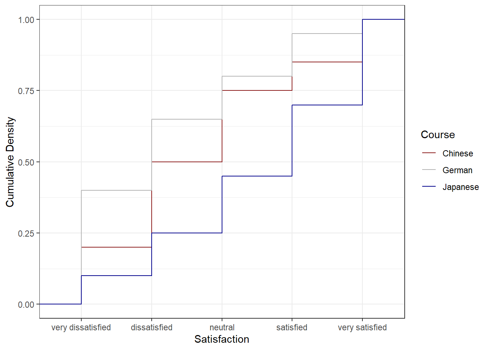
The Chinese course (blue) has the lowest cumulative curve, indicating the highest satisfaction: relatively few students gave ratings of 1 or 2. The German course (red) has the highest cumulative curve, indicating the lowest satisfaction. The Japanese course lies between the two.
Preparing Frequency Data
For bar charts and pie charts, we first summarise the raw data into frequencies and percentages.
Code
bdat <- ldat |>
dplyr::group_by(Satisfaction) |>
dplyr::summarise(Frequency = dplyr::n(), .groups = "drop") |>
dplyr::mutate(
Percent = round(Frequency / sum(Frequency) * 100, 1),
Satisfaction = factor(Satisfaction, levels = 1:5,
labels = c("very dissatisfied", "dissatisfied",
"neutral", "satisfied", "very satisfied"))
)Satisfaction | Frequency | Percent |
|---|---|---|
very dissatisfied | 70 | 23.3 |
dissatisfied | 70 | 23.3 |
neutral | 60 | 20.0 |
satisfied | 50 | 16.7 |
very satisfied | 50 | 16.7 |
Pie Charts and Their Limitations
Pie charts are visually familiar and widely used in reports aimed at general audiences. However, they have a well-documented perceptual weakness: humans are poor at judging the relative sizes of angles and arc lengths, making it difficult to compare slices accurately — particularly when slices are similar in size. For this reason, pie charts should generally be replaced by bar charts in scientific publications.
Code
# Add label positions for centred text within each slice
pdat <- bdat |>
dplyr::arrange(desc(Satisfaction)) |>
dplyr::mutate(Position = cumsum(Percent) - 0.5 * Percent)
pdat |>
ggplot(aes(x = "", y = Percent, fill = Satisfaction)) +
geom_bar(stat = "identity", width = 1, colour = "white") +
coord_polar("y", start = 0) +
scale_fill_manual(values = clrs5) +
geom_text(aes(y = Position, label = paste0(Percent, "%")),
colour = "white", size = 4) +
theme_void() +
labs(title = "Overall Satisfaction Ratings (Pie Chart)",
fill = "Rating")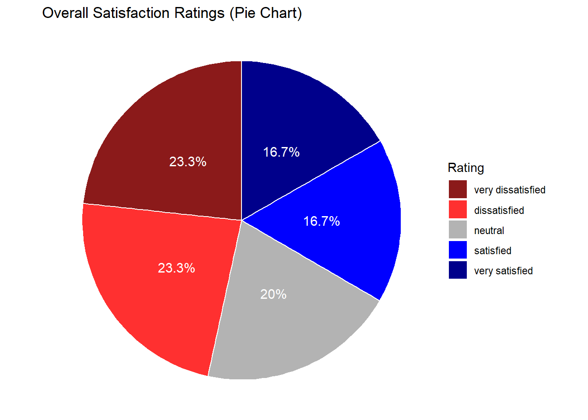
To show course-level breakdowns, we facet by Course:
Code
gldat_pie <- ldat |>
dplyr::group_by(Course, Satisfaction) |>
dplyr::summarise(Frequency = dplyr::n(), .groups = "drop") |>
dplyr::mutate(
Percent = round(Frequency / sum(Frequency) * 100, 1),
Satisfaction = factor(Satisfaction, levels = 1:5,
labels = c("very dissatisfied", "dissatisfied",
"neutral", "satisfied", "very satisfied"))
) |>
dplyr::arrange(desc(Satisfaction)) |>
dplyr::group_by(Course) |>
dplyr::mutate(Position = cumsum(Percent) - 0.5 * Percent)
gldat_pie |>
ggplot(aes(x = "", y = Percent, fill = Satisfaction)) +
facet_wrap(~Course) +
geom_bar(stat = "identity", width = 1, colour = "white") +
coord_polar("y", start = 0) +
scale_fill_manual(values = clrs5) +
geom_text(aes(y = Position, label = paste0(Percent, "%")),
colour = "white", size = 3) +
theme_void() +
labs(title = "Satisfaction by Course (Faceted Pie Charts)", fill = "Rating")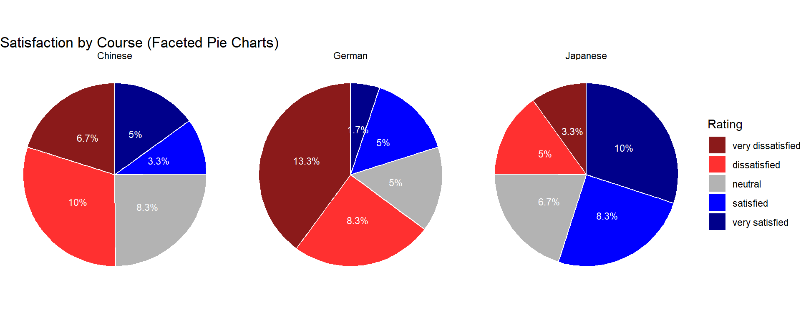
Bar Plots
Bar plots encode magnitude as length rather than angle and are therefore considerably easier to interpret. The same data that produced the pie chart above is shown below as a bar plot — the relative sizes of the satisfaction categories are immediately obvious.
Code
bdat |>
ggplot(aes(x = Satisfaction, y = Percent, fill = Satisfaction)) +
geom_col() +
geom_text(aes(y = Percent - 3, label = paste0(Percent, "%")),
colour = "white", size = 3.5) +
scale_fill_manual(values = clrs5, guide = "none") +
theme_bw() +
theme(axis.text.x = element_text(angle = 20, hjust = 1)) +
labs(
title = "Overall Satisfaction Ratings (Bar Chart)",
x = "Satisfaction rating",
y = "Percentage of respondents"
)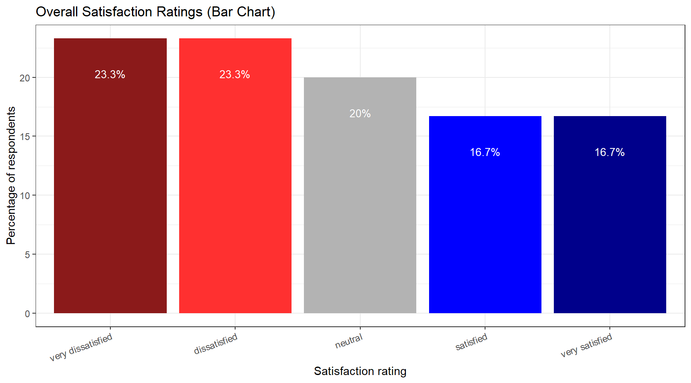
Grouped Bar Plots
A grouped bar plot adds a second categorical variable (here, Course) encoded as fill colour, making cross-group comparisons immediate.
Code
gldat_bar <- ldat |>
dplyr::group_by(Course, Satisfaction) |>
dplyr::summarise(Frequency = dplyr::n(), .groups = "drop") |>
dplyr::mutate(
Satisfaction = factor(Satisfaction, levels = 1:5,
labels = c("very dissatisfied", "dissatisfied",
"neutral", "satisfied", "very satisfied"))
)
gldat_bar |>
ggplot(aes(x = Satisfaction, y = Frequency, fill = Course)) +
geom_col(position = position_dodge(width = 0.8), width = 0.7) +
geom_text(aes(label = Frequency),
position = position_dodge(0.8), vjust = 1.5,
colour = "white", size = 3) +
scale_fill_manual(values = clrs3) +
theme_bw() +
theme(axis.text.x = element_text(angle = 20, hjust = 1)) +
labs(
title = "Satisfaction by Course — Grouped Bar Chart",
x = "Satisfaction rating",
y = "Number of respondents",
fill = "Course"
)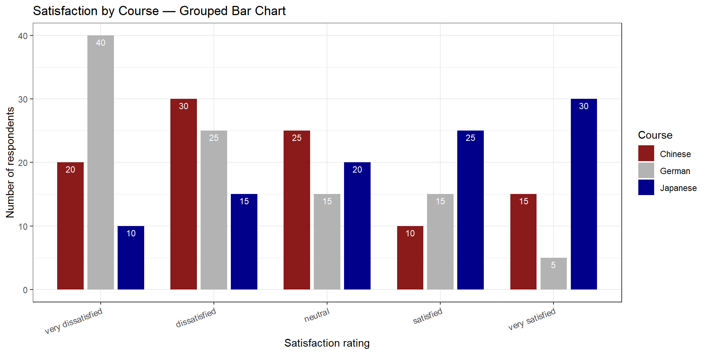
Faceted Bar Plots
Faceting creates separate panels for each group, which can be cleaner than a grouped bar chart when there are many categories.
Code
gldat_bar |>
ggplot(aes(x = Satisfaction, y = Frequency,
fill = Satisfaction, colour = Satisfaction)) +
facet_wrap(~Course) +
geom_col(position = position_dodge()) +
geom_text(aes(label = Frequency), vjust = 1.6,
colour = "white", position = position_dodge(0.9), size = 3) +
scale_fill_manual(values = clrs5, guide = "none") +
scale_colour_manual(values = clrs5, guide = "none") +
theme_bw() +
theme(axis.text.x = element_blank(), axis.ticks.x = element_blank()) +
labs(
title = "Satisfaction by Course — Faceted Bar Charts",
x = NULL,
y = "Number of respondents"
)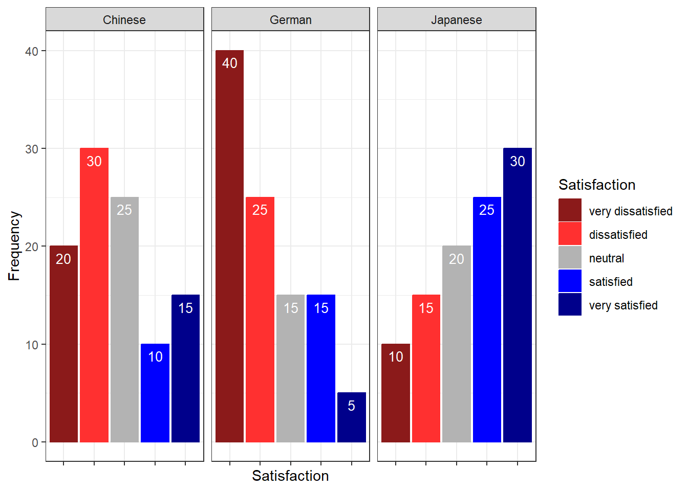
Likert Diverging Stacked Bar Plots
The likert package produces diverging stacked bar plots — arguably the most information-dense and perceptually effective visualisation for Likert survey data. The bars are split at the neutral midpoint and extend left (negative) and right (positive), making it easy to compare the balance of agreement and disagreement across items and groups simultaneously.
We load a second, larger data set (sdat) containing responses to 10 survey items.
Code
sdat <- base::readRDS("tutorials/surveys/data/sdd.rda", "rb")We clean the column names — adding a question number prefix, replacing dots with spaces, and appending a question mark — and then convert numeric responses to ordered factor labels.
Code
# Add "Q 01: ...", "Q 02: ..." prefixes and clean up dots/spaces
colnames(sdat)[3:ncol(sdat)] <- paste0(
"Q ", stringr::str_pad(1:10, 2, "left", "0"), ": ",
colnames(sdat)[3:ncol(sdat)]
) |>
stringr::str_replace_all("\\.", " ") |>
stringr::str_squish() |>
stringr::str_replace("$", "?")
# Convert numeric values 1–5 to ordered factor labels
lbs <- c("disagree", "somewhat disagree",
"neither agree nor disagree",
"somewhat agree", "agree")
survey <- sdat |>
dplyr::mutate(dplyr::across(where(is.character), factor)) |>
dplyr::mutate(dplyr::across(where(is.numeric),
~factor(.x, levels = 1:5, labels = lbs))) |>
tidyr::drop_na() |>
as.data.frame()Group | Respondent | Q 01: How did you like the course? | Q 02: How did you like the teacher? | Q 03: Was the content intersting? | Q 04: Was the content adequate for the course? | Q 05: Were there enough discussions? | Q 06: Was the use of online materials appropriate? | Q 07: Was the teacher appropriately prepared? | Q 08: Was the workload of the course appropriate? | Q 09: Was the course content enganging? | Q 10: Were there enough interactive exerceises included in the sessions? |
|---|---|---|---|---|---|---|---|---|---|---|---|
German | G1 | somewhat agree | somewhat agree | somewhat agree | somewhat agree | somewhat agree | somewhat agree | somewhat agree | somewhat agree | somewhat agree | somewhat agree |
German | G2 | somewhat agree | agree | neither agree nor disagree | somewhat agree | somewhat agree | somewhat agree | agree | neither agree nor disagree | disagree | neither agree nor disagree |
German | G3 | agree | neither agree nor disagree | somewhat agree | somewhat disagree | somewhat agree | neither agree nor disagree | somewhat agree | somewhat agree | neither agree nor disagree | disagree |
German | G4 | neither agree nor disagree | neither agree nor disagree | neither agree nor disagree | neither agree nor disagree | neither agree nor disagree | neither agree nor disagree | neither agree nor disagree | neither agree nor disagree | neither agree nor disagree | neither agree nor disagree |
German | G5 | disagree | disagree | disagree | disagree | disagree | disagree | disagree | disagree | disagree | disagree |
All Items — Overall
Code
plot(likert(survey[, 3:12]), ordered = FALSE, wrap = 60)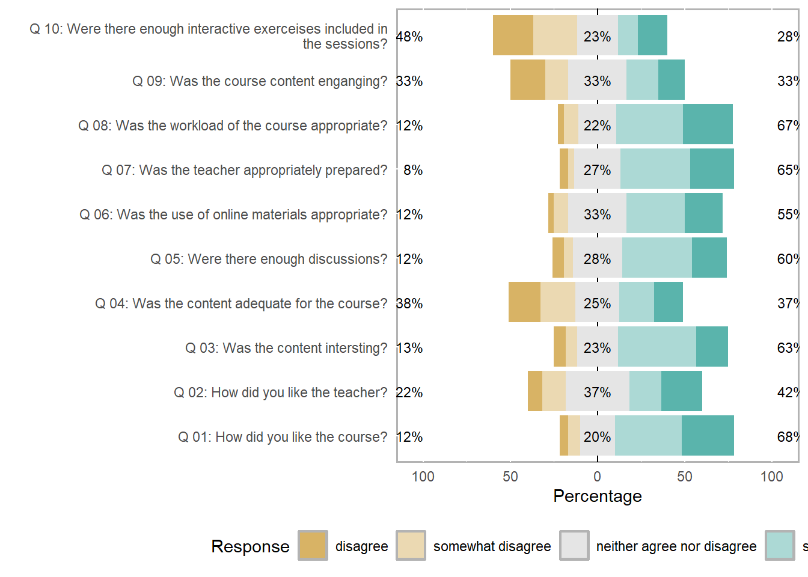
Items by Group
The grouping argument splits the diverging stacked bars by a categorical variable — here, the first column of survey (which identifies the respondent group).
Code
plot(likert(survey[, 3:8], grouping = survey[, 1]))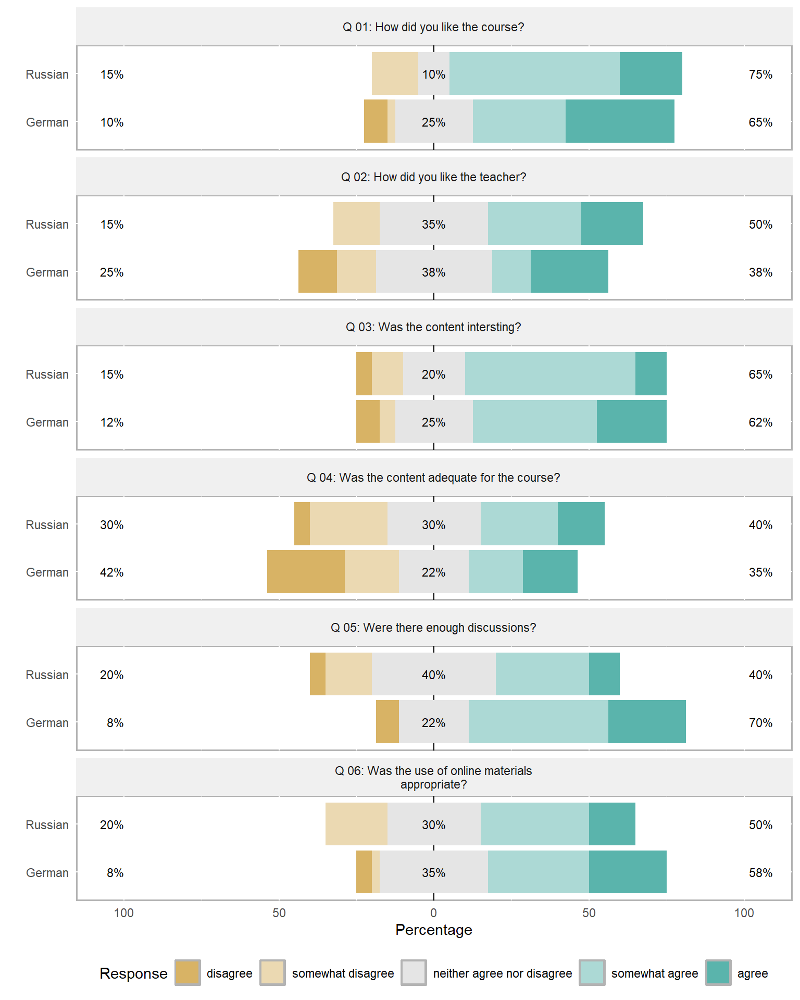
Saving Likert Plots
To save a likert plot to a file, use cowplot::save_plot():
Code
survey_plot <- plot(likert(survey[, 3:12]), ordered = FALSE, wrap = 60)
cowplot::save_plot(
here::here("images", "survey_plot.png"),
survey_plot,
base_asp = 1.5,
base_height = 8
)Mosaic Plots
A mosaic plot is useful for visualising the joint distribution of two categorical variables. The area of each tile is proportional to the frequency of that cell in the contingency table, making over- and under-represented combinations immediately visible.
Code
ldat |>
dplyr::mutate(Satisfaction = factor(Satisfaction, levels = 1:5,
labels = c("very dissatisfied",
"dissatisfied", "neutral",
"satisfied", "very satisfied"))) |>
dplyr::group_by(Course, Satisfaction) |>
dplyr::summarise(n = dplyr::n(), .groups = "drop") |>
dplyr::group_by(Course) |>
dplyr::mutate(prop = n / sum(n)) |>
ggplot(aes(x = Course, y = prop, fill = Satisfaction)) +
geom_col(width = 0.7) +
scale_fill_manual(values = clrs5) +
scale_y_continuous(labels = scales::percent_format()) +
theme_bw() +
labs(
title = "Stacked Bar Chart: Satisfaction by Course",
x = "Course",
y = "Proportion of respondents",
fill = "Satisfaction"
)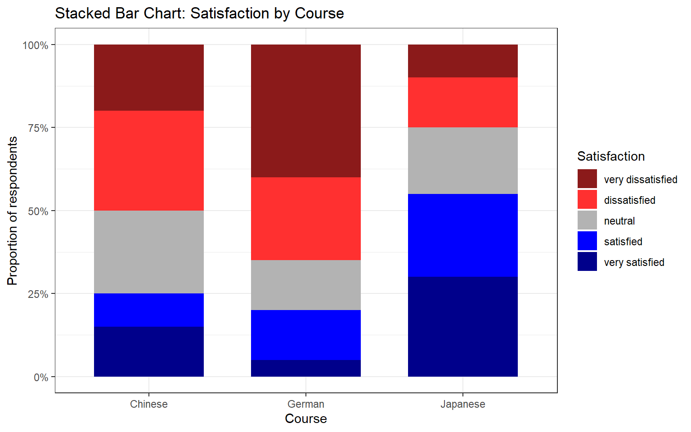
Mosaic Plots Require ggmosaic
The mosaic plot above uses geom_mosaic() from the ggmosaic package. Install it with install.packages("ggmosaic") and add library(ggmosaic) to your setup chunk if you wish to use it.
Check Your Understanding: Visualising Survey Data
Q4. A diverging stacked bar chart for a Likert item shows that the bar for Group A extends further to the right (positive side) than the bar for Group B, while both bars are of equal total length. What does this tell us?
Reliability Analysis
Section Overview
What you’ll learn: How to evaluate the internal consistency of a set of Likert items using Cronbach’s α, Guttman’s λ₆, and McDonald’s ω, and how to interpret the output of the psych::alpha() and ufs::scaleStructure() functions
When multiple survey items are intended to measure the same underlying construct (e.g. motivation, anxiety, attitude), we need to verify that they are internally consistent — that respondents who score high on one item tend to score high on the others, and vice versa. If the items are not internally consistent, they are probably measuring different things and should not be combined into a composite score.
We load a data set (surveydata) containing responses to 15 items from three hypothetical constructs (5 items each: outgoingness, conscientiousness, and intelligence).
Code
surveydata <- base::readRDS("tutorials/surveys/data/sud.rda", "rb")Respondent | Q01_Outgoing | Q02_Outgoing | Q03_Outgoing | Q04_Outgoing | Q05_Outgoing | Q06_Intelligence | Q07_Intelligence | Q08_Intelligence | Q09_Intelligence | Q10_Intelligence | Q11_Attitude | Q12_Attitude | Q13_Attitude | Q14_Attitude | Q15_Attitude |
|---|---|---|---|---|---|---|---|---|---|---|---|---|---|---|---|
Respondent_01 | 4 | 5 | 4 | 4 | 5 | 2 | 3 | 3 | 2 | 2 | 3 | 3 | 2 | 3 | 3 |
Respondent_02 | 5 | 4 | 5 | 4 | 4 | 2 | 2 | 2 | 1 | 2 | 4 | 4 | 4 | 5 | 4 |
Respondent_03 | 5 | 4 | 4 | 5 | 5 | 2 | 1 | 1 | 2 | 2 | 5 | 4 | 4 | 4 | 4 |
Respondent_04 | 5 | 5 | 5 | 4 | 5 | 1 | 1 | 1 | 1 | 1 | 5 | 4 | 5 | 5 | 5 |
Respondent_05 | 4 | 5 | 4 | 5 | 5 | 2 | 2 | 1 | 2 | 1 | 4 | 5 | 4 | 5 | 5 |
Respondent_06 | 5 | 5 | 5 | 5 | 4 | 5 | 4 | 5 | 2 | 2 | 1 | 2 | 1 | 2 | 1 |
Respondent_07 | 4 | 5 | 4 | 5 | 5 | 4 | 5 | 4 | 4 | 5 | 2 | 1 | 1 | 2 | 1 |
Respondent_08 | 4 | 4 | 5 | 4 | 5 | 5 | 4 | 5 | 4 | 5 | 1 | 2 | 1 | 1 | 2 |
Respondent_09 | 5 | 5 | 4 | 4 | 4 | 5 | 5 | 4 | 4 | 5 | 1 | 2 | 2 | 1 | 2 |
Respondent_10 | 4 | 5 | 5 | 4 | 4 | 4 | 4 | 5 | 4 | 5 | 2 | 1 | 2 | 2 | 1 |
Respondent_11 | 2 | 2 | 2 | 1 | 1 | 4 | 5 | 5 | 5 | 4 | 1 | 2 | 2 | 2 | 1 |
Respondent_12 | 3 | 3 | 2 | 3 | 2 | 5 | 5 | 5 | 5 | 4 | 1 | 2 | 1 | 1 | 1 |
Respondent_13 | 3 | 2 | 2 | 2 | 3 | 4 | 3 | 4 | 5 | 4 | 2 | 2 | 1 | 2 | 2 |
Respondent_14 | 2 | 2 | 2 | 1 | 1 | 3 | 4 | 3 | 5 | 4 | 1 | 2 | 1 | 1 | 1 |
Respondent_15 | 1 | 2 | 2 | 2 | 1 | 1 | 2 | 2 | 2 | 5 | 4 | 3 | 4 | 4 | 5 |
Respondent_16 | 1 | 1 | 1 | 1 | 2 | 2 | 3 | 2 | 1 | 4 | 3 | 4 | 4 | 3 | 4 |
Respondent_17 | 2 | 2 | 2 | 2 | 2 | 2 | 2 | 2 | 2 | 2 | 1 | 1 | 1 | 2 | 2 |
Respondent_18 | 1 | 1 | 1 | 1 | 1 | 1 | 2 | 2 | 2 | 5 | 5 | 5 | 5 | 5 | 5 |
Respondent_19 | 2 | 2 | 3 | 2 | 3 | 2 | 1 | 1 | 1 | 5 | 4 | 5 | 5 | 4 | 5 |
Respondent_20 | 1 | 1 | 1 | 1 | 2 | 2 | 3 | 2 | 2 | 5 | 5 | 5 | 5 | 5 | 5 |
Cronbach’s α
Cronbach’s α (Cronbach 1951) is the most widely used measure of internal consistency. It can be understood as the average of all possible split-half correlations among the items. Values above .70 are conventionally considered acceptable; values above .80 are good; values above .90 are excellent (though very high values may indicate item redundancy).
The formula is:
\[\alpha = \frac{N \cdot \bar{c}}{\bar{v} + (N-1) \cdot \bar{c}}\]
where \(N\) is the number of items, \(\bar{c}\) is the average inter-item covariance, and \(\bar{v}\) is the average item variance.
Limitations of Cronbach’s α: it assumes that all items contribute equally to the construct (tau-equivalence), an assumption that is often violated in practice. When this assumption is violated, α underestimates true reliability. It also assumes unidimensionality — that all items tap into a single underlying factor.
Code
# Cronbach's alpha for the five "outgoingness" items
cronbach_out <- psych::alpha(
surveydata[c("Q01_Outgoing", "Q02_Outgoing", "Q03_Outgoing",
"Q04_Outgoing", "Q05_Outgoing")],
check.keys = FALSE
)
print(cronbach_out)
Reliability analysis
Call: psych::alpha(x = surveydata[c("Q01_Outgoing", "Q02_Outgoing",
"Q03_Outgoing", "Q04_Outgoing", "Q05_Outgoing")], check.keys = FALSE)
raw_alpha std.alpha G6(smc) average_r S/N ase mean sd median_r
0.98 0.98 0.97 0.89 42 0.0083 3.1 1.5 0.9
95% confidence boundaries
lower alpha upper
Feldt 0.96 0.98 0.99
Duhachek 0.96 0.98 0.99
Reliability if an item is dropped:
raw_alpha std.alpha G6(smc) average_r S/N alpha se var.r med.r
Q01_Outgoing 0.97 0.97 0.97 0.89 33 0.0108 0.00099 0.89
Q02_Outgoing 0.97 0.97 0.96 0.89 31 0.0116 0.00054 0.89
Q03_Outgoing 0.97 0.97 0.97 0.90 35 0.0104 0.00095 0.90
Q04_Outgoing 0.97 0.97 0.96 0.89 31 0.0115 0.00086 0.89
Q05_Outgoing 0.98 0.98 0.97 0.91 41 0.0088 0.00034 0.91
Item statistics
n raw.r std.r r.cor r.drop mean sd
Q01_Outgoing 20 0.96 0.96 0.95 0.94 3.1 1.5
Q02_Outgoing 20 0.97 0.97 0.96 0.95 3.2 1.6
Q03_Outgoing 20 0.95 0.95 0.94 0.93 3.1 1.5
Q04_Outgoing 20 0.97 0.97 0.96 0.95 3.0 1.6
Q05_Outgoing 20 0.94 0.94 0.91 0.90 3.2 1.6
Non missing response frequency for each item
1 2 3 4 5 miss
Q01_Outgoing 0.20 0.2 0.10 0.25 0.25 0
Q02_Outgoing 0.15 0.3 0.05 0.15 0.35 0
Q03_Outgoing 0.15 0.3 0.05 0.25 0.25 0
Q04_Outgoing 0.25 0.2 0.05 0.30 0.20 0
Q05_Outgoing 0.20 0.2 0.10 0.20 0.30 0In the output, focus on:
- raw_alpha: Cronbach’s α for the full item set — should be ≥ .70
- G6(smc): Guttman’s λ₆ — the squared multiple correlation of each item with the remaining items; values close to 1 indicate that the item is well-explained by the others
- alpha if deleted: what α would be if each item were removed — if removing an item increases α substantially, that item may be worth reconsidering
Guttman’s λ₆
Guttman’s λ₆ (Guttman 1945) estimates reliability by computing the squared multiple correlation (SMC) of each item with all other items. It is less affected by violations of tau-equivalence than Cronbach’s α and is generally considered a better lower bound on reliability when items differ in how strongly they relate to the construct. It is reported in the G6(smc) column of psych::alpha() output.
McDonald’s ω
McDonald’s ω (omega) is currently considered the most accurate measure of internal consistency for most survey data (Revelle and Zinbarg 2009; Zinbarg et al. 2005). It estimates reliability without requiring the tau-equivalence assumption that Cronbach’s α relies on. There are two variants:
- ω hierarchical (ωₕ): estimates the proportion of item variance attributable to a single general factor — useful when you want to know how much of the variance is due to the primary construct
- ω total (ωₜ): estimates the reliability of the total scale score, taking all common variance (including group factors) into account
Code
# McDonald's omega and other reliability measures via ufs::scaleStructure()
reliability_out <- ufs::scaleStructure(
surveydata[c("Q01_Outgoing", "Q02_Outgoing", "Q03_Outgoing",
"Q04_Outgoing", "Q05_Outgoing")]
)

Code
print(reliability_out)
Information about this analysis:
Dataframe: surveydata[c("Q01_Outgoing", "Q02_Outgoing", "Q03_Outgoing",
Items: all
Observations: 20
Positive correlations: 10 out of 10 (100%)
Estimates assuming interval level:
Information about this analysis:
Dataframe: "Q04_Outgoing", "Q05_Outgoing")]
Items: all
Observations: 20
Positive correlations: 10 out of 10 (100%)
Estimates assuming interval level:
Omega (total): 0.98
Omega (hierarchical): 0.95
Revelle's omega (total): 0.98
Greatest Lower Bound (GLB): 0.99
Coefficient H: 0.98
Coefficient alpha: 0.98
(Estimates assuming ordinal level not computed, as the polychoric correlation matrix has missing values.)
Note: the normal point estimate and confidence interval for omega are based on the procedure suggested by Dunn, Baguley & Brunsden (2013) using the MBESS function ci.reliability, whereas the psych package point estimate was suggested in Revelle & Zinbarg (2008). See the help ('?scaleStructure') for more information.scaleStructure() reports Cronbach’s α, Guttman’s λ₆, McDonald’s ωₕ and ωₜ, and the Greatest Lower Bound (GLB) — all in one call, making it easy to compare the estimates and choose the most appropriate one to report.
Which Reliability Measure to Report?
For most survey research, McDonald’s ω total is the recommended measure to report, as it does not require the tau-equivalence assumption and provides an accurate estimate even when items differ in their factor loadings. Report Cronbach’s α as well for comparability with older literature, but note its limitations. If α and ω are very similar, the tau-equivalence assumption is approximately satisfied and the choice matters less.
Check Your Understanding: Reliability
Q5. You compute Cronbach’s α for a 6-item scale and obtain α = .61. The “alpha if deleted” column shows that removing item 3 would raise α to .79. What is the most appropriate course of action?
Factor Analysis and Principal Component Analysis
Section Overview
What you’ll learn: How to use factor analysis to identify latent structure in survey data and evaluate whether items load onto their intended constructs, and how to use principal component analysis (PCA) to reduce a set of correlated items to a smaller number of composite scores
Key functions: psych::factanal(), stats::princomp()
Factor analysis and PCA both reduce a large set of observed variables to a smaller number of latent dimensions, but they differ in their goals and assumptions:
- Factor analysis (FA) is a model-based method. It assumes that the observed item correlations arise from a set of underlying latent factors plus item-specific error. The goal is to discover or confirm the latent structure of a set of items.
- Principal Component Analysis (PCA) is a data reduction method. It finds linear combinations of the original variables that capture the maximum variance, without assuming any underlying model. The goal is to summarise the variance of a set of items in as few components as possible.
In survey research, FA is typically used to evaluate construct validity (do the items designed to measure the same construct cluster together?), while PCA is used to create composite scores that can be used as predictors or outcomes in further analyses.
Factor Analysis
We apply factanal() with rotation = "varimax" to the full 15-item survey data set (excluding the respondent ID column). Varimax rotation maximises the variance of the squared loadings within each factor, producing a solution in which each item loads strongly on at most one factor — which makes interpretation easier.
Code
surveydata_items <- surveydata |>
dplyr::select(-Respondent)
fa_result <- factanal(surveydata_items, factors = 3, rotation = "varimax")
print(fa_result, digits = 2, cutoff = 0.3, sort = TRUE)
Call:
factanal(x = surveydata_items, factors = 3, rotation = "varimax")
Uniquenesses:
Q01_Outgoing Q02_Outgoing Q03_Outgoing Q04_Outgoing
0.09 0.06 0.12 0.07
Q05_Outgoing Q06_Intelligence Q07_Intelligence Q08_Intelligence
0.14 0.10 0.13 0.10
Q09_Intelligence Q10_Intelligence Q11_Attitude Q12_Attitude
0.28 0.41 0.08 0.14
Q13_Attitude Q14_Attitude Q15_Attitude
0.04 0.09 0.06
Loadings:
Factor1 Factor2 Factor3
Q06_Intelligence -0.82 0.41
Q07_Intelligence -0.80 0.47
Q08_Intelligence -0.85 0.42
Q09_Intelligence -0.79
Q11_Attitude 0.96
Q12_Attitude 0.92
Q13_Attitude 0.97
Q14_Attitude 0.95
Q15_Attitude 0.96
Q01_Outgoing 0.94
Q02_Outgoing 0.96
Q03_Outgoing 0.93
Q04_Outgoing 0.96
Q05_Outgoing 0.92
Q10_Intelligence -0.46 0.57
Factor1 Factor2 Factor3
SS loadings 7.29 4.78 1.02
Proportion Var 0.49 0.32 0.07
Cumulative Var 0.49 0.80 0.87
Test of the hypothesis that 3 factors are sufficient.
The chi square statistic is 62.79 on 63 degrees of freedom.
The p-value is 0.484 In the output, each row is an item and each column is a factor. The values are factor loadings — correlations between each item and each factor. Loadings above .40 (in absolute value) are conventionally considered substantively meaningful. Items that load strongly on the same factor are measuring the same underlying construct.
The cutoff = 0.3 argument suppresses loadings below .30 from the printed output, which reduces clutter and makes the factor structure easier to read.
Code
# Visualise Factor 1 vs Factor 2 loadings
loadings_mat <- fa_result$loadings[, 1:2]
plot(loadings_mat,
type = "n",
xlim = c(-0.2, 1.1),
ylim = c(-0.2, 1.1),
xlab = "Factor 1",
ylab = "Factor 2",
main = "Factor Loadings: Factor 1 vs Factor 2")
abline(h = 0, v = 0, col = "grey70", lty = 2)
text(loadings_mat,
labels = names(surveydata_items),
cex = 0.75)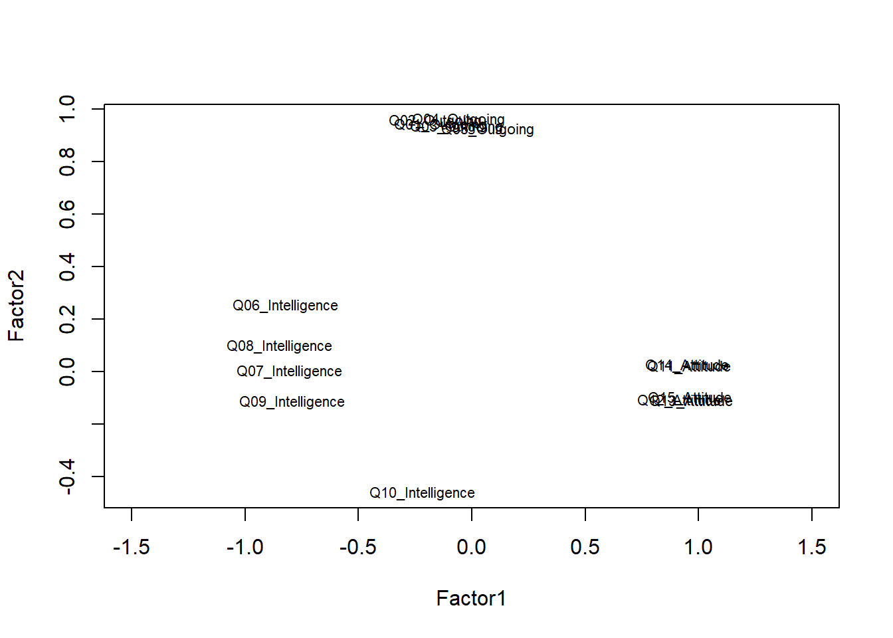
Items that cluster together in the loading plot reflect the same underlying factor. Items that plot near the origin (loadings close to zero on both factors) are not well captured by the two-factor solution and may warrant review.
Choosing the Number of Factors
The number of factors to extract is one of the most consequential decisions in a factor analysis. Common criteria include: the eigenvalue-greater-than-one rule (Kaiser criterion), the scree plot (look for the elbow), and parallel analysis (compare eigenvalues to those from random data). In practice, the choice should be guided by theoretical considerations as well as data-driven criteria — always ask whether the factor solution makes conceptual sense.
Principal Component Analysis
We apply PCA to the five outgoingness items to illustrate data reduction. The goal is to determine whether these five items can be adequately summarised by a single composite score.
Code
pca_out <- princomp(
surveydata[c("Q01_Outgoing", "Q02_Outgoing", "Q03_Outgoing",
"Q04_Outgoing", "Q05_Outgoing")],
cor = TRUE # use correlation matrix (standardises variables)
)
summary(pca_out) # cumulative proportion of variance explainedImportance of components:
Comp.1 Comp.2 Comp.3 Comp.4 Comp.5
Standard deviation 2.1399 0.41221 0.33748 0.29870 0.21818
Proportion of Variance 0.9159 0.03398 0.02278 0.01784 0.00952
Cumulative Proportion 0.9159 0.94986 0.97264 0.99048 1.00000Code
loadings(pca_out) # component loadings
Loadings:
Comp.1 Comp.2 Comp.3 Comp.4 Comp.5
Q01_Outgoing 0.448 0.324 0.831
Q02_Outgoing 0.453 0.242 -0.408 -0.360 0.663
Q03_Outgoing 0.446 0.405 0.626 -0.405 -0.286
Q04_Outgoing 0.452 -0.191 -0.568 -0.114 -0.650
Q05_Outgoing 0.437 -0.798 0.342 0.230
Comp.1 Comp.2 Comp.3 Comp.4 Comp.5
SS loadings 1.0 1.0 1.0 1.0 1.0
Proportion Var 0.2 0.2 0.2 0.2 0.2
Cumulative Var 0.2 0.4 0.6 0.8 1.0Code
# Scree plot: look for the elbow to determine how many components to retain
plot(pca_out, type = "lines",
main = "Scree Plot — Outgoingness Items")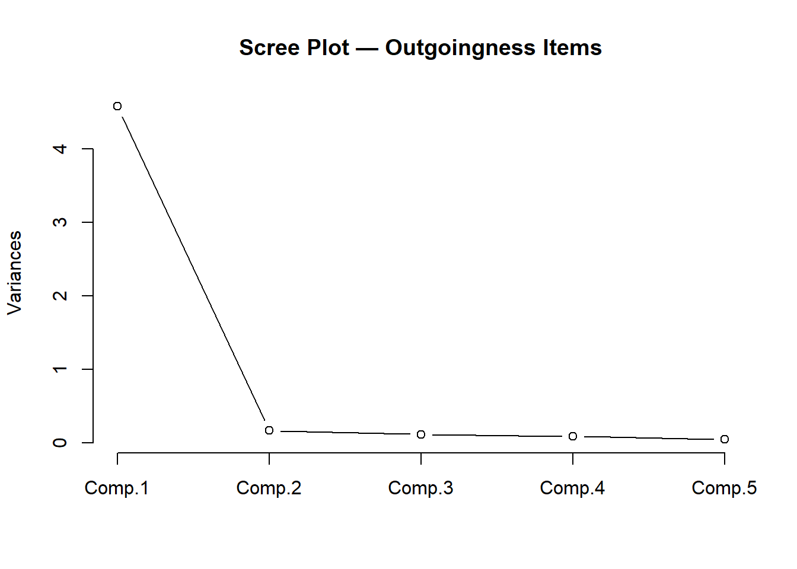
The scree plot shows a steep drop after the first component, with subsequent components contributing relatively little additional variance. This confirms that the five outgoingness items can be well summarised by a single principal component.
Code
# Extract component scores (rows = respondents, columns = components)
head(pca_out$scores, 10) Comp.1 Comp.2 Comp.3 Comp.4 Comp.5
[1,] 1.838 -0.3662 -0.05472 -0.18598 0.45152
[2,] 1.866 0.4914 0.43588 0.29352 -0.29327
[3,] 2.144 -0.4311 -0.14566 0.52920 -0.37631
[4,] 2.444 0.1287 0.39433 0.09341 0.28596
[5,] 2.136 -0.4921 -0.42957 -0.26090 0.02262
[6,] 2.457 0.5219 -0.20319 -0.01460 -0.29283
[7,] 2.136 -0.4921 -0.42957 -0.26090 0.02262
[8,] 1.851 -0.2452 0.63889 -0.23029 -0.17380
[9,] 1.854 0.3704 -0.25773 0.33782 0.33205
[10,] 1.859 0.4304 0.15198 -0.49658 0.10566The first column (Comp.1) is the composite score for outgoingness. This score can replace the five individual items in subsequent regression or group comparison analyses, reducing both collinearity and the number of predictors.
Check Your Understanding: Factor Analysis and PCA
Q6. A factor analysis of a 12-item scale intended to measure three constructs (4 items each) produces a solution in which item Q4 loads strongly on Factor 2 (.71) rather than Factor 1 (.12), where it was theoretically expected. What are the most appropriate next steps?
Ordinal Regression
Section Overview
What you’ll learn: How to fit, diagnose, interpret, and visualise an ordinal logistic regression model using MASS::polr(), including the computation of odds ratios, confidence intervals, p-values, and a test of the proportional odds assumption
Key functions: MASS::polr(), brant::brant(), confint(), predict()
Ordinal logistic regression (also called the proportional odds model or cumulative link model) is the appropriate regression method when the outcome variable is ordinal — when it has a natural ordering of categories but the distances between categories cannot be assumed to be equal (Agresti 2010). It is therefore one of the key statistical tools for analysing Likert-scale outcome variables in survey research.
The model predicts the log-odds of being in category \(j\) or below as a linear function of the predictors. The proportional odds assumption requires that the effect of each predictor is the same across all category thresholds — this is both the model’s key strength (parsimony) and its key assumption (which must be tested).
The Data
We use a data set of 400 students. The outcome variable is Recommend — a committee’s recommendation for a prestigious programme, with three ordered levels: unlikely, somewhat likely, and very likely. The predictors are: Internal (whether the student attended the focal school), Exchange (whether the student participated in an exchange programme), and FinalScore (a test score, continuous).
Code
ordata <- base::readRDS("tutorials/surveys/data/oda.rda", "rb")
str(ordata)'data.frame': 400 obs. of 4 variables:
$ Recommend : chr "very likely" "somewhat likely" "unlikely" "somewhat likely" ...
$ Internal : int 0 1 1 0 0 0 0 0 0 1 ...
$ Exchange : int 0 0 1 0 0 1 0 0 0 0 ...
$ FinalScore: num 3.26 3.21 3.94 2.81 2.53 ...Code
# Re-level Recommend as an ordered factor; recode binary predictors
ordata <- ordata |>
dplyr::mutate(
Recommend = factor(Recommend,
levels = c("unlikely", "somewhat likely", "very likely"),
ordered = TRUE),
Exchange = ifelse(Exchange == 1, "Exchange", "NoExchange"),
Internal = ifelse(Internal == 1, "Internal", "External")
)Exploratory Analysis
Before fitting the model, we inspect the data through cross-tabulation and a visualisation.
Code
# Three-way cross-tabulation: Exchange × Recommend × Internal
ftable(xtabs(~Exchange + Recommend + Internal, data = ordata)) Internal External Internal
Exchange Recommend
Exchange unlikely 25 6
somewhat likely 12 4
very likely 7 3
NoExchange unlikely 175 14
somewhat likely 98 26
very likely 20 10Code
# Summary statistics for the continuous predictor
summary(ordata$FinalScore) Min. 1st Qu. Median Mean 3rd Qu. Max.
1.90 2.72 2.99 3.00 3.27 4.00 Code
sd(ordata$FinalScore)[1] 0.3979Code
ordata |>
ggplot(aes(x = Recommend, y = FinalScore)) +
geom_boxplot(outlier.alpha = 0.3) +
geom_jitter(alpha = 0.3, width = 0.15, size = 1) +
facet_grid(Exchange ~ Internal) +
theme_bw() +
theme(axis.text.x = element_text(angle = 25, hjust = 1)) +
labs(
title = "Final Score by Recommendation Category",
subtitle = "Faceted by Exchange participation and Internal/External status",
x = "Recommendation",
y = "Final Score"
)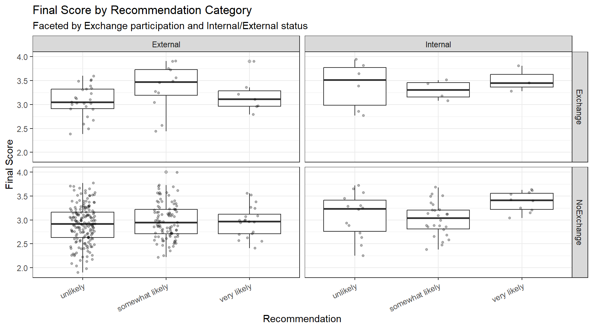
The boxplots suggest that internal students and higher-scoring students tend to receive more positive recommendations, while exchange participation shows less clear separation.
Fitting the Model
Code
m <- MASS::polr(Recommend ~ Internal + Exchange + FinalScore,
data = ordata,
Hess = TRUE)
summary(m)Call:
MASS::polr(formula = Recommend ~ Internal + Exchange + FinalScore,
data = ordata, Hess = TRUE)
Coefficients:
Value Std. Error t value
InternalInternal 1.0477 0.266 3.942
ExchangeNoExchange 0.0587 0.298 0.197
FinalScore 0.6157 0.261 2.363
Intercepts:
Value Std. Error t value
unlikely|somewhat likely 2.262 0.882 2.564
somewhat likely|very likely 4.357 0.904 4.818
Residual Deviance: 717.02
AIC: 727.02 The model output includes coefficient estimates (on the log-odds scale) and their standard errors for each predictor, plus threshold coefficients (unlikely|somewhat likely and somewhat likely|very likely) that represent the log-odds of being at or below each cut-point when all predictors are zero.
Computing p-values
polr() does not provide p-values by default (because the appropriate reference distribution for the t-value in ordinal logistic regression is debated). We compute approximate p-values using the normal approximation.
Code
coef_table <- coef(summary(m))
p_values <- pnorm(abs(coef_table[, "t value"]), lower.tail = FALSE) * 2
coef_table <- cbind(coef_table, "p value" = round(p_values, 4))
coef_table Value Std. Error t value p value
InternalInternal 1.04766 0.2658 3.942 0.0001
ExchangeNoExchange 0.05868 0.2979 0.197 0.8438
FinalScore 0.61574 0.2606 2.363 0.0182
unlikely|somewhat likely 2.26200 0.8822 2.564 0.0103
somewhat likely|very likely 4.35744 0.9045 4.818 0.0000Both InternalInternal and FinalScore are significant predictors of recommendation (p < .05). ExchangeNoExchange does not reach significance.
Odds Ratios and Confidence Intervals
Exponentiation of the log-odds coefficients gives odds ratios (ORs), which are easier to interpret. An OR > 1 means the predictor increases the odds of receiving a higher recommendation category.
Code
ci <- confint(m) # profile likelihood CIs (preferred over Wald CIs)
exp(cbind(OR = coef(m), ci)) OR 2.5 % 97.5 %
InternalInternal 2.851 1.696 4.817
ExchangeNoExchange 1.060 0.595 1.920
FinalScore 1.851 1.114 3.098The OR for InternalInternal indicates that internal students have substantially higher odds of receiving a positive recommendation compared to external students, holding other predictors constant. Each one-unit increase in FinalScore also meaningfully increases the odds of a more positive recommendation. The ExchangeNoExchange OR is close to 1 and its confidence interval includes 1, consistent with the non-significant p-value.
Testing the Proportional Odds Assumption
The proportional odds model assumes that the effect of each predictor is the same across all threshold comparisons (i.e. the same predictor effect for unlikely vs. somewhat+very likely and for unlikely+somewhat vs. very likely). This is known as the proportional odds assumption (or parallel lines assumption). It can be tested using the Brant test (Brant 1990).
Code
brant::brant(m)----------------------------------------------------
Test for X2 df probability
----------------------------------------------------
Omnibus 4.34 3 0.23
InternalInternal 0.13 1 0.72
ExchangeNoExchange 3.44 1 0.06
FinalScore 0.18 1 0.67
----------------------------------------------------
H0: Parallel Regression Assumption holdsA non-significant Brant test (p > .05 for each predictor and for the omnibus test) indicates no evidence against the proportional odds assumption. If the assumption is violated for one or more predictors, alternatives include the partial proportional odds model or multinomial logistic regression.
When the Proportional Odds Assumption Is Violated
If the Brant test is significant for a predictor, the effect of that predictor differs across threshold comparisons — the single coefficient estimated by polr() is a compromise that may misrepresent the true relationship. In such cases, consider: (1) fitting a partial proportional odds model using the VGAM package; (2) fitting a multinomial logistic regression using nnet::multinom(); or (3) collapsing the outcome to a binary variable if the research question permits.
Visualising Model Predictions
We extract the predicted probabilities for each outcome category from the model and visualise how the predicted probability of each recommendation changes with FinalScore, separately for each combination of Internal and Exchange.
Code
# Attach predicted probabilities to the data
predictions <- predict(m, data = ordata, type = "probs")
colnames(predictions) <- c("unlikely", "somewhat_likely", "very_likely")
newordata <- cbind(ordata, predictions) |>
dplyr::select(-Recommend) |>
tidyr::pivot_longer(
cols = c(unlikely, somewhat_likely, very_likely),
names_to = "Recommendation",
values_to = "Probability"
) |>
dplyr::mutate(
Recommendation = factor(Recommendation,
levels = c("unlikely", "somewhat_likely", "very_likely"),
labels = c("Unlikely", "Somewhat likely", "Very likely"))
)Code
newordata |>
ggplot(aes(x = FinalScore, y = Probability,
colour = Recommendation, group = Recommendation)) +
facet_grid(Exchange ~ Internal) +
geom_smooth(method = "loess", se = TRUE, alpha = 0.15) +
scale_colour_manual(values = clrs3) +
theme_bw() +
labs(
title = "Predicted Recommendation Probabilities by Final Score",
subtitle = "Faceted by Exchange participation and Internal/External status",
x = "Final Score",
y = "Predicted probability",
colour = "Recommendation"
)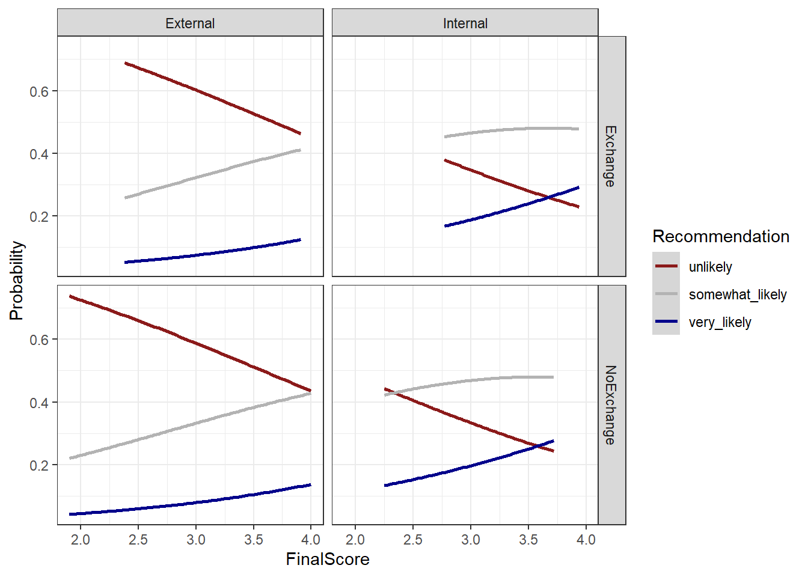
The plot confirms the model’s key findings: as FinalScore increases, the probability of a very likely recommendation rises while the probability of unlikely falls. Internal students show a higher baseline probability of positive recommendation at all score levels compared to external students. The effect of exchange participation is small and inconsistent across the score range, consistent with its non-significance in the model.
Check Your Understanding: Ordinal Regression
Q7. The Brant test for your ordinal logistic regression model returns p = .03 for the predictor Proficiency. What does this indicate, and what should you do?
Summary
This tutorial has walked through the complete survey research workflow in R: from designing questionnaire items with appropriate scale types, through building deployable survey instruments, to visualising, evaluating, and statistically analysing the resulting data.
The key practical takeaways are:
Design before you collect. Most problems in survey data analysis — unclear findings, low reliability, violated model assumptions — have their root in the design phase. Invest time in clear question wording, appropriate scale selection, piloting, and randomisation before deployment.
Match your visualisation to your question. Cumulative density plots are ideal for comparing ordinal distributions across groups. Diverging stacked bar plots are the most information-dense visualisation for Likert data. Bar charts are almost always preferable to pie charts for scientific communication.
Report multiple reliability measures. McDonald’s ω total is the most accurate single estimate of internal consistency, but report Cronbach’s α as well for comparability with existing literature. Use the alpha-if-deleted and item-total correlation statistics to diagnose individual problematic items rather than dropping items solely on statistical grounds.
Test your assumptions. The proportional odds assumption of ordinal logistic regression is frequently violated. Always run the Brant test and be prepared to use alternative models if the assumption does not hold.
Keep the full pipeline reproducible. From survey authoring (surveydown, shiny) through data cleaning (dplyr, tidyr) to analysis (psych, MASS) and visualisation (ggplot2, likert), R supports a fully transparent and reproducible research workflow. Document every decision in your code.
Citation and Session Info
Citation
Martin Schweinberger. 2026. Visualising and Analysing Survey and Questionnaire Data with R. The Language Technology and Data Analysis Laboratory (LADAL), The University of Queensland, Australia. url: https://ladal.edu.au/tutorials/surveys/surveys.html (Version 2026.03.28), doi: .
@manual{martinschweinberger2026visualising,
author = {Martin Schweinberger},
title = {Visualising and Analysing Survey and Questionnaire Data with R},
year = {2026},
note = {https://ladal.edu.au/tutorials/surveys/surveys.html},
organization = {The Language Technology and Data Analysis Laboratory (LADAL), The University of Queensland, Australia},
edition = {2026.03.28}
doi = {}
}Code
sessionInfo()R version 4.4.2 (2024-10-31 ucrt)
Platform: x86_64-w64-mingw32/x64
Running under: Windows 11 x64 (build 26200)
Matrix products: default
locale:
[1] LC_COLLATE=English_United States.utf8
[2] LC_CTYPE=English_United States.utf8
[3] LC_MONETARY=English_United States.utf8
[4] LC_NUMERIC=C
[5] LC_TIME=English_United States.utf8
time zone: Australia/Brisbane
tzcode source: internal
attached base packages:
[1] stats graphics grDevices datasets utils methods base
other attached packages:
[1] brant_0.3-0 GPArotation_2024.3-1 checkdown_0.0.13
[4] ufs_0.5.12 devtools_2.4.5 usethis_3.1.0
[7] flextable_0.9.11 here_1.0.2 viridis_0.6.5
[10] viridisLite_0.4.2 psych_2.4.12 MASS_7.3-61
[13] likert_1.3.5 xtable_1.8-4 lubridate_1.9.4
[16] forcats_1.0.0 stringr_1.5.1 dplyr_1.2.0
[19] purrr_1.0.4 readr_2.1.5 tidyr_1.3.2
[22] tibble_3.2.1 ggplot2_4.0.2 tidyverse_2.0.0
[25] lattice_0.22-6 knitr_1.51
loaded via a namespace (and not attached):
[1] mnormt_2.1.1 gridExtra_2.3 remotes_2.5.0
[4] rlang_1.1.7 magrittr_2.0.3 compiler_4.4.2
[7] mgcv_1.9-1 systemfonts_1.3.1 vctrs_0.7.1
[10] reshape2_1.4.4 profvis_0.4.0 pkgconfig_2.0.3
[13] fastmap_1.2.0 ellipsis_0.3.2 labeling_0.4.3
[16] pander_0.6.5 promises_1.3.2 rmarkdown_2.30
[19] markdown_2.0 sessioninfo_1.2.3 tzdb_0.4.0
[22] ragg_1.3.3 xfun_0.56 cachem_1.1.0
[25] litedown_0.9 jsonlite_1.9.0 later_1.4.1
[28] uuid_1.2-1 parallel_4.4.2 R6_2.6.1
[31] stringi_1.8.4 RColorBrewer_1.1-3 pkgload_1.4.0
[34] Rcpp_1.1.1 splines_4.4.2 httpuv_1.6.15
[37] Matrix_1.7-2 timechange_0.3.0 tidyselect_1.2.1
[40] rstudioapi_0.17.1 yaml_2.3.10 codetools_0.2-20
[43] miniUI_0.1.1.1 pkgbuild_1.4.6 plyr_1.8.9
[46] shiny_1.10.0 withr_3.0.2 S7_0.2.1
[49] askpass_1.2.1 evaluate_1.0.3 urlchecker_1.0.1
[52] zip_2.3.2 xml2_1.3.6 pillar_1.10.1
[55] renv_1.1.7 generics_0.1.3 rprojroot_2.1.1
[58] hms_1.1.3 commonmark_2.0.0 scales_1.4.0
[61] glue_1.8.0 gdtools_0.5.0 tools_4.4.2
[64] data.table_1.17.0 fs_1.6.5 grid_4.4.2
[67] nlme_3.1-166 patchwork_1.3.0 cli_3.6.4
[70] textshaping_1.0.0 officer_0.7.3 fontBitstreamVera_0.1.1
[73] gtable_0.3.6 digest_0.6.39 fontquiver_0.2.1
[76] htmlwidgets_1.6.4 farver_2.1.2 memoise_2.0.1
[79] htmltools_0.5.9 lifecycle_1.0.5 mime_0.12
[82] fontLiberation_0.1.0 openssl_2.3.2
AI Transparency Statement
This tutorial was re-developed with the assistance of Claude (claude.ai), a large language model created by Anthropic. Claude was used to help revise the tutorial text, structure the instructional content, generate the R code examples, and write the checkdown quiz questions and feedback strings. All content was reviewed, edited, and approved by the author (Martin Schweinberger), who takes full responsibility for the accuracy and pedagogical appropriateness of the material. The use of AI assistance is disclosed here in the interest of transparency and in accordance with emerging best practices for AI-assisted academic content creation.
References
Agresti, Alan. 2010. Analysis of Ordinal Categorical Data. Vol. 656. John Wiley & Sons. https://doi.org/https://doi.org/10.1002/9780470594001.
Brant, Rollin. 1990. “Assessing Proportionality in the Proportional Odds Model for Ordinal Logistic Regression.” Biometrics, 1171–78.
Brown, James Dean. 2001. Using Surveys in Language Programs. Cambridge: Cambridge University Press.
Cronbach, Lee J. 1951. “Coefficient Alpha and the Internal Strucuture of Tests.” Psychometrika 16: 297–334.
Guttman, Louis. 1945. “A Basis for Analyzing Test-Retest Reliability.” Psychometrika 10 (4): 255–82. https://doi.org/https://doi.org/10.1007/bf02288892.
Likert, Rensis. 1932. “A Technique for the Measurement of Attitudes.” Archives of Psychology 140: 5–55.
Revelle, W., and Richard E. Zinbarg. 2009. “Coefficients Alpha, Beta, Omega and the Glb: Comments on Sijtsma.” Psychometrika 74 (1): 1145–54. https://doi.org/https://doi.org/10.1007/s11336-008-9102-z.
Zinbarg, Richard E, William Revelle, Iftah Yovel, and Wen Li. 2005. “Cronbach’s \(\alpha\), Revelle’s \(\beta\), and McDonald’s $$ h: Their Relations with Each Other and Two Alternative Conceptualizations of Reliability.” Psychometrika 70 (1): 123–33.